1.4142135623730951Python und Mathematik
Die häufigsten Sondertasten
Der code muss mit vorne mit &#x und am Ende mit
; ergänzt werden. Beispiel: ⇤
| Taste/Key | Symbol | HTML (hex) | Hex (raw) |
|---|---|---|---|
| Command | ⌘ | ⌘ | 2318 |
| Shift | ⇧ | ⇧ | 21E7 |
| Option (Alt) | ⌥ | ⌥ | 2325 |
| Control | ⌃ | ⌃ | 2303 |
| Caps Lock | ⇪ | ⇪ | 21EA |
| Return | ⏎ | ⏎ | 23CE |
| Enter | ⌤ | ⌤ | 2324 |
| Escape | ⎋ | ⎋ | 238B |
| Delete (Backsp) | ⌫ | ⌫ | 232B |
| Forward Delete | ⌦ | ⌦ | 2326 |
| Tab (→) | ⇥ | ⇥ | 21E5 |
| Shift+Tab (←) | ⇤ | ⇤ | 21E4 |
| Pfeil ↑ | ↑ | ↑ | 2191 |
| Pfeil ↓ | ↓ | ↓ | 2193 |
| Pfeil ← | ← | ← | 2190 |
| Pfeil → | → | → | 2192 |
| Page Up | ⇞ | ⇞ | 21DE |
| Page Down | ⇟ | ⇟ | 21DF |
| Home | ⇱ | ⇱ | 21F1 |
| End | ⇲ | ⇲ | 21F2 |
| Eject | ⏏ | ⏏ | 23CF |
| Power | ⏻ | ⏻ | 23FB |
\(\require{cancel}\)
Quadratwurzel von 2
Hier mal ein Beispiel, wie wir mit Python die Wurzel einer Zahl ermitteln, z. B. für \(\sqrt{2}\).
Beispiel: Gaußsches Integral
\[ \int_0^\infty e^{-x^2} dx = \frac{\sqrt{\pi}}{2} \]
Code
import numpy as np
import matplotlib.pyplot as plt
# Dunkles Design
# Definitionsbereich für die Funktion
x = np.linspace(0, 5, 500)
y = np.exp(-(x**2))
# Plot der Funktion
plt.plot(x, y, label=r"$e^{-x^2}$")
# Fläche unter der Kurve füllen
plt.fill_between(x, y, alpha=0.3, label="Fläche unter der Kurve")
# Achsen und Titel
plt.xlabel("x")
plt.ylabel("f(x)")
plt.title(r"$\int_0^\infty e^{-x^2} dx = \frac{\sqrt{\pi}}{2}$")
# Zusatz: Linie bei y = 0 zur Orientierung
plt.axhline(0, linewidth=1.2, alpha=0.6)
# Grid und Legende
plt.grid(True)
plt.legend()
plt.tight_layout()
plt.show()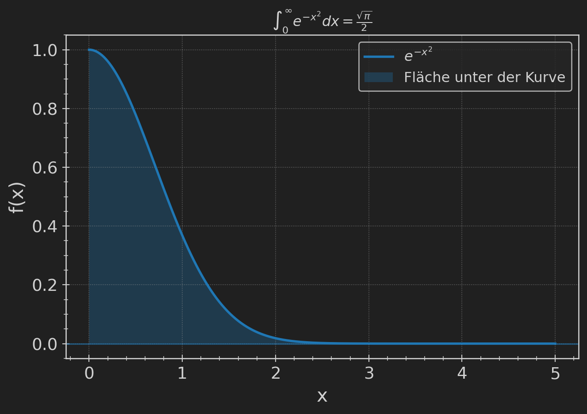
Der Plot zeigt die Funktion \[ e^{-x^2} \]
und hebt die Fläche unter der Kurve hervor – visuell passend zur mathematischen Formel.
Beispiel - \(x^2\)
Code
import matplotlib.pyplot as plt
import numpy as np
# Dunkles Plot-Design aktivieren
x = np.linspace(-10, 10, 400)
y = x**2
plt.plot(x, y, label="f(x) = x²")
plt.xlabel("x")
plt.ylabel("f(x)")
plt.title("Graph der Funktion f(x) = x²")
plt.grid(True)
plt.axhline(0, linewidth=1.5, alpha=0.7)
plt.axvline(0, linewidth=1.5, alpha=0.7)
plt.legend()
plt.tight_layout()
plt.show()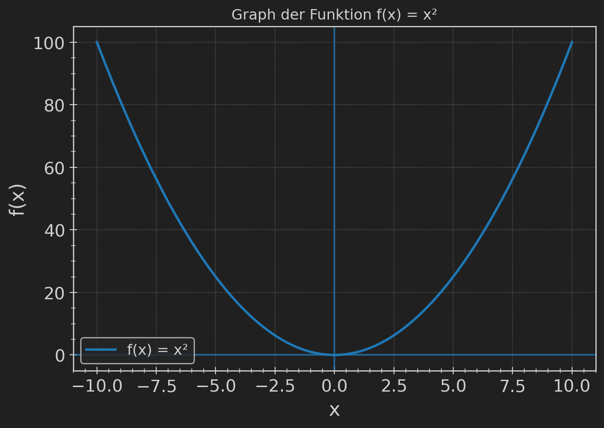
Beispiel - Definitionslücke
\[ f(x) = \frac{x^2 + x - 6}{x - 2} \]
Code
import numpy as np
import matplotlib.pyplot as plt
# Funktion und vereinfachte Form (zur Bestimmung des Lochwerts)
def f(x):
# Hier ist unsere Funktion
return (x**2 + x - 6) / (x - 2)
# return (x**2 + x) / (x - 2)
def simplified(x):
return x + 3
# x-Werte links und rechts der hebbaren Definitionslücke bei x=2
x_left = np.linspace(-4, 2, 500, endpoint=False)
x_right = np.linspace(2, 6, 500, endpoint=False) + 1e-6
plt.figure(figsize=(8, 6))
plt.plot(x_left, f(x_left), label=r"$f(x) = \frac{x^2 + x - 6}{x - 2}$")
plt.plot(x_right, f(x_right))
# Hebbare Definitionslücke als offener Kreis (Wert aus vereinfachter Form: x+3 -> 5)
hole_x = 2.0
hole_y = simplified(hole_x)
plt.scatter(hole_x, hole_y, facecolors="none", s=120, zorder=5, label=r"Loch bei $x=2$")
# Hilfslinie bei x=2
plt.axvline(x=2, linestyle="--", alpha=0.7)
# Achsen & Titel
plt.axhline(0, linewidth=0.8, alpha=0.6)
plt.axvline(0, linewidth=0.8, alpha=0.6)
plt.xlabel("x")
plt.ylabel("f(x)")
plt.title(
r"Plot der Funktion $f(x) = \frac{x^2 + x - 6}{x - 2}$ (hebbare Definitionslücke)"
)
plt.legend()
plt.grid(True)
plt.tight_layout()
plt.show()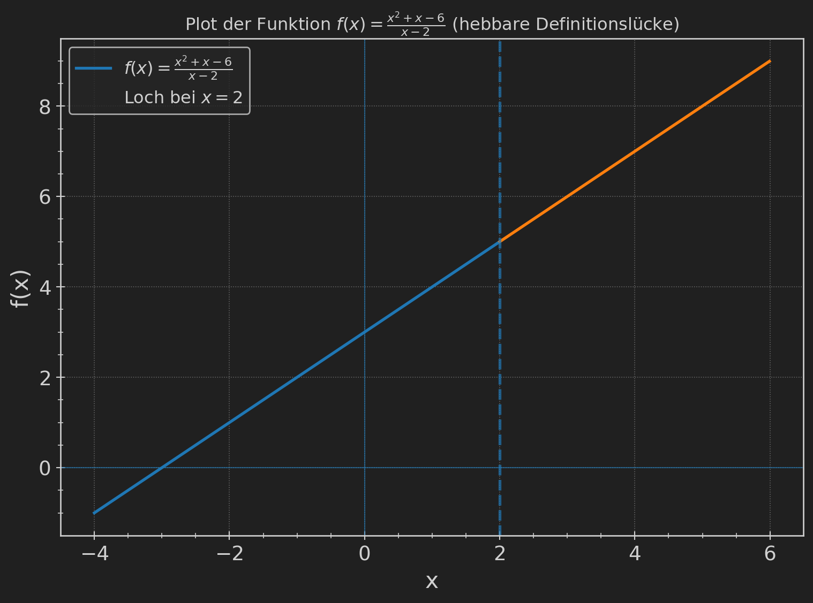
Beispiel 3: Integral Rechnung
Wir wollen uns anhand des nachfolgenden Beispiels mit der Bildung von Integralen beschäftigen.
- Diagramm mit einer Beschleunigungskurve
-
x-Achse:
- Zeit
-
y-Achse:
- Geschwindigkeit
Formel: Zurückgelegte Strecke im freien Fall
\[ s(t) \;=\; \tfrac{1}{2}\,g\,t^2 \]
Code
import numpy as np
import matplotlib.pyplot as plt
# Erdbeschleunigung (m/s^2)
g = 9.81
# Zeit von 0 bis 10 Sekunden
t = np.linspace(0, 10, 500)
# Berechnung der zurückgelegten Strecke s(t) = 1/2 * g * t^2
s = 0.5 * g * t**2
# Plot der Distanz über Zeit
plt.plot(t, s, label="s(t) = 0.5 · g · t²")
# Fläche unter der Kurve von t=2 bis t=6 einfärben
mask = (t >= 2) & (t <= 6)
plt.fill_between(
t[mask], s[mask], alpha=0.3, label="Strecke zwischen t=2 und t=6"
)
plt.xlabel("Zeit t (s)")
plt.ylabel("Distanz s(t) (m)")
plt.title("Freier Fall: Zurückgelegte Strecke über die Zeit")
plt.grid(True)
plt.legend()
plt.tight_layout()
plt.show()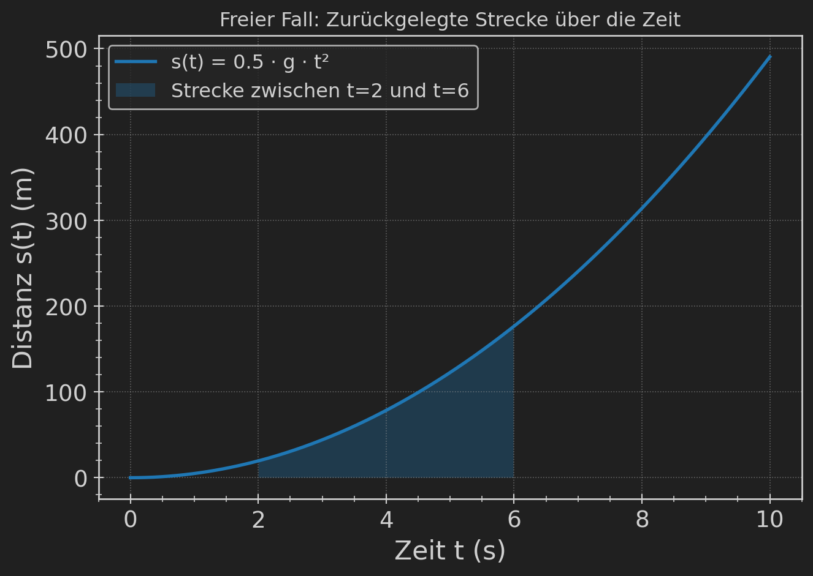
Formel: Integral von t=2 bis t=6
\[ \Delta s \;=\; \int_{2}^{6} g\,t\,\mathrm{d}t \;=\; \left[\tfrac{1}{2}\,g\,t^2\right]_{2}^{6} \;=\; \tfrac{1}{2}\,g\,\bigl(6^2 - 2^2\bigr) \]
Differenzial Rechnung / Differential Calculus
Wichtigste Begriffe der Differenzialrechnung
1. Funktion (function)
Eine Vorschrift, die jedem Wert ( x ) einen Funktionswert ( f(x) ) zuordnet.
2. Ableitung (derivative)
Die Ableitung der ursprünglichen Funktion beschreibt die Steigung (Slope) der Funktion an einer bestimmten Stelle. Mathematisch: \[ f'(x) = \lim_{h \to 0} \frac{f(x+h) - f(x)}{h} \] Interpretation: Momentane Änderungsrate.
Das englische Wort slope bedeutet „Steigung“. In der Mathematik bezeichnet es die Steigung einer Funktion an einem Punkt – also wie stark ( f(x) ) an dieser Stelle steigt oder fällt. Die Ableitung ( f’(x) ) beschreibt genau diese slope.
3. Potenzregel (power rule)
Die Potenzregel ist eine der grundlegendsten Ableitungsregeln. Sie besagt:
Für eine Funktion der Form
\[ f(x) = x^n \]
gilt:
\[ f'(x) = n \cdot x^{n - 1} \]
Das bedeutet: Beim Ableiten eines Potenzausdrucks (power expression) wird der Exponent vor das ( x ) gezogen, und der neue Exponent ist um 1 kleiner.
Beispiele:
| Funktion | Ableitung |
|---|---|
| \(x^4\) | \(4x^3\) |
| \(x^3\) | \(3x^2\) |
| \(x^2\) | \(2x\) |
| \(x\) | \(1\) |
| \(x^0 = 1\) | \(0\) |
| \(x^{-1}\) | \(-x^{-2}\) |
| \(\sqrt{x} = x^{1/2}\) | \(\frac{1}{2}x^{-1/2}\) |
3. Tangente (tangent)
Eine Gerade, die eine Funktion in einem Punkt berührt. Ihre Steigung (Slope) entspricht der Ableitung in diesem Punkt.
4. Extremstellen (extrema)
Extremstellen sind Punkte, an denen eine Funktion ein lokales Maximum (Hochpunkt) oder Minimum (Tiefpunkt) hat – also Stellen, an denen die Funktion kurzzeitig aufhört zu steigen oder zu fallen.
Um solche Punkte zu finden, verwendet man die erste Ableitung ( f’(x) ):
- Zunächst sucht man Stellen, an denen ( f’(x) = 0 ) ist. Das bedeutet: Die Steigung der Tangente ist dort null – also waagrecht.
- Dies sind sogenannte kritische Punkte, an denen Maxima oder Minima auftreten können.
Ob es sich wirklich um ein Maximum oder Minimum handelt, erkennt man mit der zweiten Ableitung ( f’’(x) ):
- ( f’’(x) > 0 ): Die Funktion ist dort nach oben gekrümmt ⇒ Minimum
- ( f’’(x) < 0 ): Die Funktion ist dort nach unten gekrümmt ⇒ Maximum
Zusammenfassung:
- ( f’(x) = 0 ): notwendige Bedingung für ein Extremum
- ( f’’(x) ): hinreichende Bedingung zur Unterscheidung von Minimum oder Maximum
Code
import numpy as np
import matplotlib.pyplot as plt
# Funktion definieren
def f(x):
return x**3 - 3 * x**2 + 1
# Erste Ableitung
def df(x):
return 3 * x**2 - 6 * x
# Zweite Ableitung
def ddf(x):
return 6 * x - 6
# Definitionsbereich
x = np.linspace(-1, 4, 400)
y = f(x)
# Kritische Punkte: f'(x) = 0
# 3x² - 6x = 0 → x = 0, x = 2
crit_points = [0, 2]
crit_values = [f(xi) for xi in crit_points]
# Bestimmen ob Max oder Min
second_deriv = [ddf(xi) for xi in crit_points]
labels = ["Maximum" if d < 0 else "Minimum" for d in second_deriv]
colors = ["red" if l == "Maximum" else "green" for l in labels]
# Plot
plt.figure(figsize=(8, 6))
plt.plot(x, y, label=r"$f(x) = x^3 - 3x^2 + 1$", color="cyan")
# Extrempunkte markieren
for xi, yi, lbl, col in zip(crit_points, crit_values, labels, colors):
plt.scatter(xi, yi, color=col, s=100, label=f"{lbl} bei x = {xi}")
plt.text(xi, yi + 1, f"{lbl}\n({xi}, {round(yi, 2)})", color=col, ha="center")
# Achsen & Layout
plt.axhline(0, color="white", linewidth=1, alpha=0.5)
plt.axvline(0, color="white", linewidth=1, alpha=0.5)
plt.title("Funktion mit Maximum und Minimum", color="white")
plt.xlabel("x", color="white")
plt.ylabel("f(x)", color="white")
plt.grid(True, color="gray", linestyle="--", alpha=0.4)
plt.legend(facecolor="#222", edgecolor="white")
plt.tight_layout()
plt.show()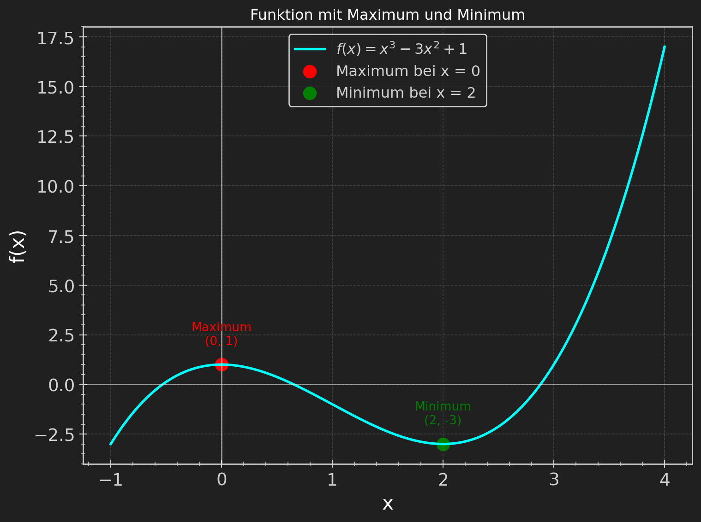
5. Wendepunkt (inflection point)
Punkt, an dem sich die Krümmung der Funktion ändert. Bedingung: \[ f''(x) = 0 \quad \text{und} \quad f'''(x) \neq 0 \]
6. Steigungsfunktion (derivative function)
Die Ableitung ( f’(x) ) als eigene Funktion zeigt, wie stark und in welche Richtung sich ( f(x) ) ändert.
7. Linearisierung (linear approximation)
Näherung einer Funktion durch ihre Tangente bei ( x_0 ): \[ f(x) \approx f(x_0) + f'(x_0)(x - x_0) \]
8. Differential (differential)
Kleiner Funktionswertunterschied, oft geschrieben als: \[ \mathrm{d}y = f'(x)\,\mathrm{d}x \]
9. Kettenregel (chain rule)
Für verkettete Funktionen ( f(g(x)) ): \[ \frac{\mathrm{d}}{\mathrm{d}x} f(g(x)) = f'(g(x)) \cdot g'(x) \]
10. Produkt- & Quotientenregel (product & quotient rule)
Produktregel: \[ (uv)' = u'v + uv' \]
Quotientenregel: \[ \left( \frac{u}{v} \right)' = \frac{u'v - uv'}{v^2} \]
Doppelter Dreisatz
| Handwerker | Fläche (m²) | Zeit (h) |
|---|---|---|
| 4 | 250 | 6 |
| 5 | 600 | x |
Aufgabe
- 4 Handwerker benötigen für eine Fläche von 250 m^2 6 Stunden
- Wieviel Zeit brauchen 5 Handwerker für 600 m^2
Formel: \[ \frac{250}{4 \cdot 6} = \frac{600}{5 \cdot x} \]
Code
Benötigte Zeit: 11.52 StundenFancy Functions
Hier ein paar besonders interessante mathematische Funktionen – jeweils mit Formel und Python-Plot!
1. Gedämpfte Sinuswelle
\[ f(x) = e^{-0.1x} \cdot \sin(\pi x) \]
Code
import numpy as np
import matplotlib.pyplot as plt
x = np.linspace(0, 10, 500)
y = np.exp(-0.1 * x) * np.sin(np.pi * x)
plt.plot(x, y, label=r"$e^{-0.1x} \cdot \sin(\pi x)$")
plt.xlabel("x")
plt.ylabel("f(x)")
plt.title("Gedämpfte Sinuswelle")
plt.axhline(0, linewidth=1, alpha=0.6)
plt.grid(True)
plt.legend()
plt.tight_layout()
plt.show()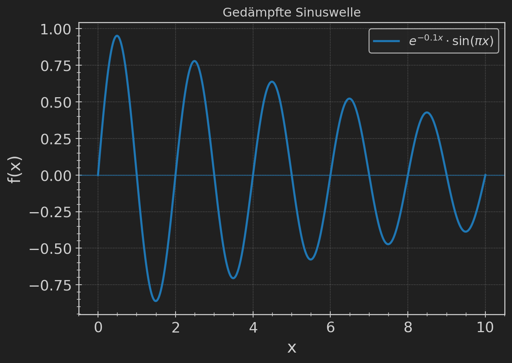
2. Lissajous-Kurve
\[ \begin{aligned} x(t) &= \sin(3t) \\ y(t) &= \sin(4t) \end{aligned} \]
Code
import numpy as np
import matplotlib.pyplot as plt
t = np.linspace(0, 2 * np.pi, 1000)
x = np.sin(3 * t)
y = np.sin(4 * t)
plt.figure(figsize=(6, 6))
plt.plot(x, y, label="Lissajous-Kurve")
plt.xlabel("x(t)")
plt.ylabel("y(t)")
plt.title(r"Lissajous-Kurve: $x = \sin(3t),\ y = \sin(4t)$")
plt.grid(True)
plt.legend()
plt.tight_layout()
plt.show()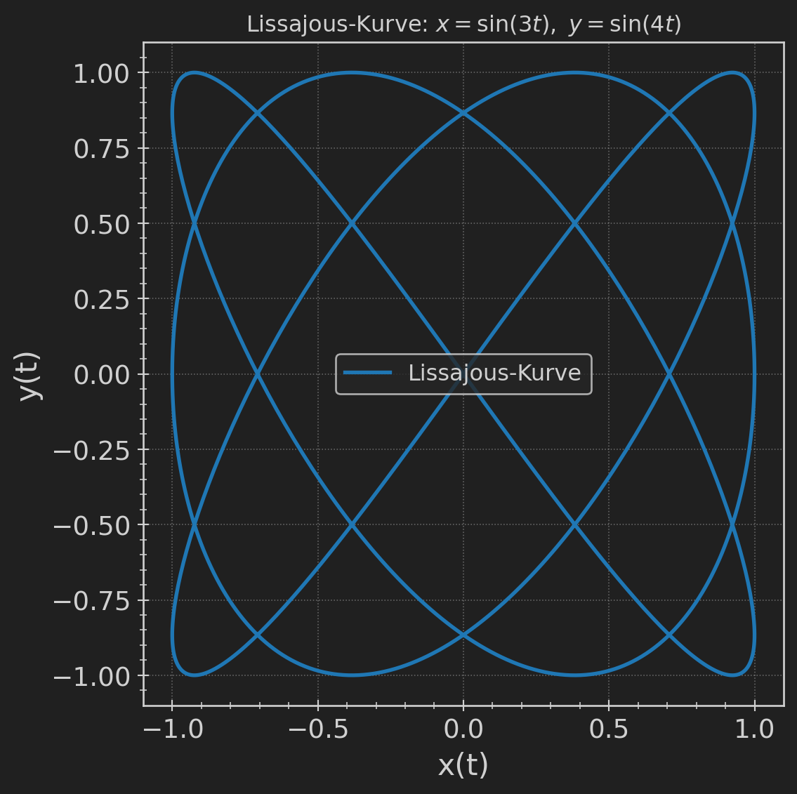
3. Gaußsche Welle
\[ f(x) = e^{-x^2} \cdot \cos(5x) \]
Code
import numpy as np
import matplotlib.pyplot as plt
x = np.linspace(-4, 4, 800)
y = np.exp(-x**2) * np.cos(5 * x)
plt.plot(x, y, label=r"$e^{-x^2} \cdot \cos(5x)$")
plt.xlabel("x")
plt.ylabel("f(x)")
plt.title("Gaußsche Welle")
plt.axhline(0, linewidth=1, alpha=0.6)
plt.grid(True)
plt.legend()
plt.tight_layout()
plt.show()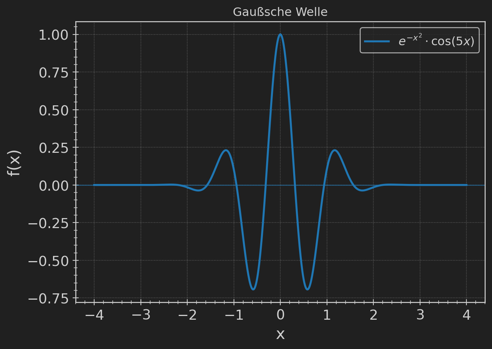
4. Absolute Sinusfunktion
\[ f(x) = |\sin(x)| \]
Code
import numpy as np
import matplotlib.pyplot as plt
x = np.linspace(-2 * np.pi, 2 * np.pi, 600)
y = np.abs(np.sin(x))
plt.plot(x, y, label=r"$|\sin(x)|$")
plt.xlabel("x")
plt.ylabel("f(x)")
plt.title("Absolute Sinusfunktion")
plt.axhline(0, linewidth=1, alpha=0.6)
plt.grid(True)
plt.legend()
plt.tight_layout()
plt.show()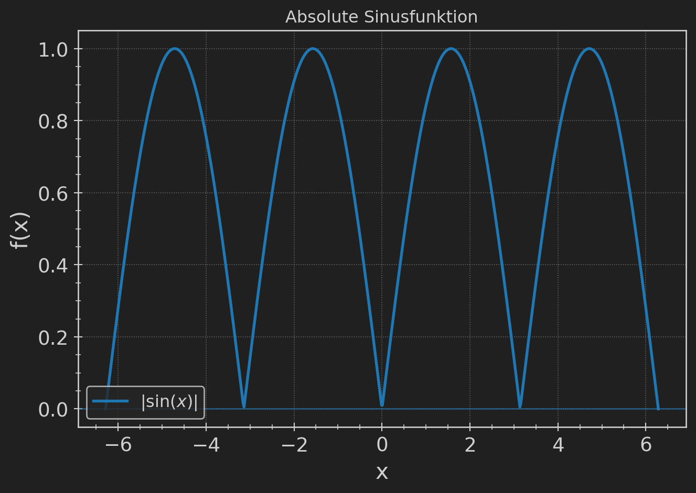
5. Einheitskreis
Der Einheitskreis ist ein Kreis mit Radius 1. Die Parameterdarstellung lautet:
\[ x(t) = \cos(t) \]
\[ y(t) = \sin(t) \]
wobei ( t ).
Code
import numpy as np
import matplotlib.pyplot as plt
t = np.linspace(0, 2 * np.pi, 500)
x = np.cos(t)
y = np.sin(t)
plt.figure(figsize=(6, 6))
plt.plot(x, y, label="Einheitskreis")
plt.xlabel("x(t)")
plt.ylabel("y(t)")
plt.title(r"Einheitskreis: $x(t) = \cos(t),\ y(t) = \sin(t)$")
plt.gca().set_aspect("equal", adjustable="box")
plt.grid(True)
plt.legend()
plt.tight_layout()
plt.show()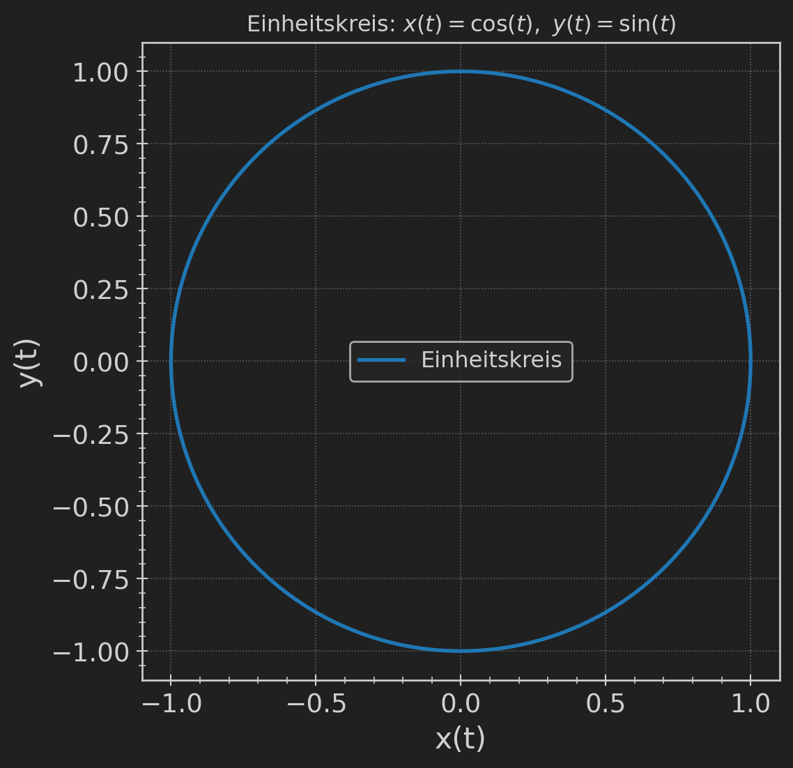
6. Quadrat (parametrisch)
Ein Quadrat mit Seitenlänge 2 und Mittelpunkt im Ursprung kann stückweise parametrisiert werden für (t ):
\[ (x(t), y(t)) = \begin{cases} (1,\ -1 + 2t), & 0 \le t < 1 \\ (3 - 2t,\ 1), & 1 \le t < 2 \\ (-1,\ 5 - 2t), & 2 \le t < 3 \\ (-7 + 2t,\ -1), & 3 \le t \le 4 \\ \end{cases} \]
Code
import numpy as np
import matplotlib.pyplot as plt
# Parameter t in vier Abschnitte teilen
segments = [
(np.linspace(0, 1, 200, endpoint=False), lambda t: (np.ones_like(t), -1 + 2*t)), # rechts hoch
(np.linspace(1, 2, 200, endpoint=False), lambda t: (3 - 2*t, np.ones_like(t))), # oben links
(np.linspace(2, 3, 200, endpoint=False), lambda t: (-1 * np.ones_like(t), 5 - 2*t)), # links runter
(np.linspace(3, 4, 200, True), lambda t: (-7 + 2*t, -1 * np.ones_like(t))) # unten rechts, schließt
]
xs, ys = [], []
for t, fn in segments:
x_seg, y_seg = fn(t)
xs.append(x_seg)
ys.append(y_seg)
x = np.concatenate(xs)
y = np.concatenate(ys)
plt.figure(figsize=(6, 6))
plt.plot(x, y, label="Quadrat (parametrisch)")
plt.gca().set_aspect('equal', adjustable='box')
plt.axhline(0, linewidth=0.8, alpha=0.6)
plt.axvline(0, linewidth=0.8, alpha=0.6)
plt.grid(True)
plt.xlabel("x(t)")
plt.ylabel("y(t)")
plt.title("Quadrat mit Seitenlänge 2 (parametrisch)")
plt.legend()
plt.tight_layout()
plt.show()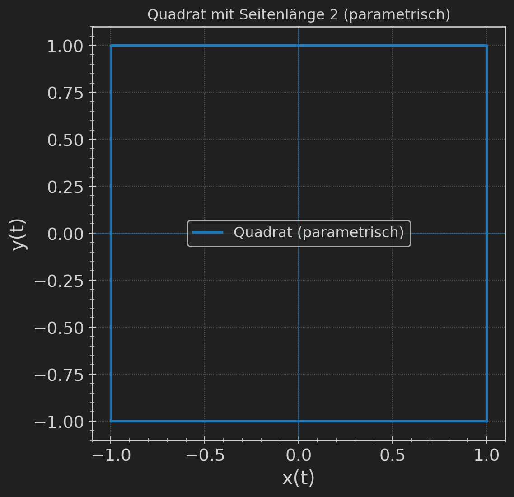
Dreieck (parametrisch)
Ein gleichseitiges Dreieck (in den Einheitskreis eingepasst) lässt sich stückweise parametrisieren. Wir wählen die Eckpunkte (A=(0,1), B=!(-,,-), C=!(,,-)).
\[ V_k = \begin{pmatrix}\cos\!\bigl(\theta_0 + \tfrac{2\pi k}{3}\bigr)\\[2pt]\sin\!\bigl(\theta_0 + \tfrac{2\pi k}{3}\bigr)\end{pmatrix},\quad \gamma_k(u) = (1-u)\,V_k + u\,V_{k+1},\ \ u\in[0,1],\ \ k\in\{0,1,2\}. \]
Die drei Kanten werden linear durchlaufen (Parameter (u
Code
import numpy as np
import matplotlib.pyplot as plt
A = np.array([0.0, 1.0])
B = np.array([-np.sqrt(3)/2, -0.5])
C = np.array([ np.sqrt(3)/2, -0.5])
# Hilfsfunktion für eine Kante
def edge(P, Q, n=200, endpoint=False):
u = np.linspace(0, 1, n, endpoint=endpoint)
XY = (1 - u)[:, None] * P + u[:, None] * Q
return XY[:, 0], XY[:, 1]
x1, y1 = edge(A, B)
x2, y2 = edge(B, C)
x3, y3 = edge(C, A, endpoint=True)
x = np.concatenate([x1, x2, x3])
y = np.concatenate([y1, y2, y3])
plt.figure(figsize=(6, 6))
plt.plot(x, y, label="Gleichseitiges Dreieck (parametrisch)")
plt.gca().set_aspect('equal', adjustable='box')
plt.axhline(0, linewidth=0.8, alpha=0.6)
plt.axvline(0, linewidth=0.8, alpha=0.6)
plt.grid(True)
plt.xlabel("x(t)")
plt.ylabel("y(t)")
plt.title("Gleichseitiges Dreieck (parametrisch)")
plt.legend()
plt.tight_layout()
plt.show()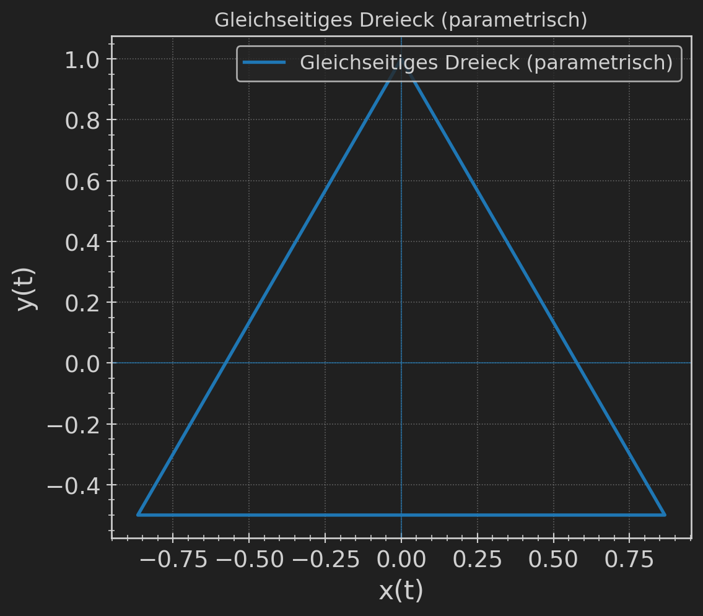
Gitarren-Plektrum (Reuleaux-Dreieck)
\[ A_{\text{Reuleaux}} = \tfrac{1}{2}\, (\pi - \sqrt{3})\, s^{2}. \]
Viele Plektren sind annähernd teardrop-förmig (z. B. Fender 351). Ein mathematisch elegantes, dreieckiges Profil mit abgerundeten Ecken ist das Reuleaux-Dreieck — eine Kurve konstanter Breite. Es entsteht aus einem gleichseitigen Dreieck der Seitenlänge (s), indem jede Seite durch einen Kreisbogen (Radius (s)) mit Mittelpunkt im gegenüberliegenden Eckpunkt ersetzt wird.
Code
import numpy as np
import matplotlib.pyplot as plt
s = 2.0 # Breite/Seitenlänge
V1 = np.array([0.0, 0.0])
V2 = np.array([s, 0.0])
V3 = np.array([s/2, np.sqrt(3)*s/2])
# Hilfsfunktionen
def angle(p):
return np.arctan2(p[1], p[0])
# Kreisbogen von P nach Q, Zentrum C (Gegen-Uhrzeigersinn)
def arc_points(C, P, Q, n=300):
a1 = angle(P - C)
a2 = angle(Q - C)
# in CCW-Richtung laufen
if a2 <= a1:
a2 += 2*np.pi
A = np.linspace(a1, a2, n)
r = np.linalg.norm(P - C)
X = C[0] + r*np.cos(A)
Y = C[1] + r*np.sin(A)
return X, Y
# Drei Bögen
x1, y1 = arc_points(V1, V2, V3)
x2, y2 = arc_points(V2, V3, V1)
x3, y3 = arc_points(V3, V1, V2)
x = np.concatenate([x1, x2, x3])
y = np.concatenate([y1, y2, y3])
plt.figure(figsize=(6, 6))
plt.plot(x, y, label="Reuleaux-Dreieck (≈ Plektrum)")
plt.gca().set_aspect('equal', adjustable='box')
plt.grid(True)
plt.xlabel("x")
plt.ylabel("y")
plt.title("Reuleaux-Dreieck (Konstante Breite)")
plt.legend()
plt.tight_layout()
plt.show()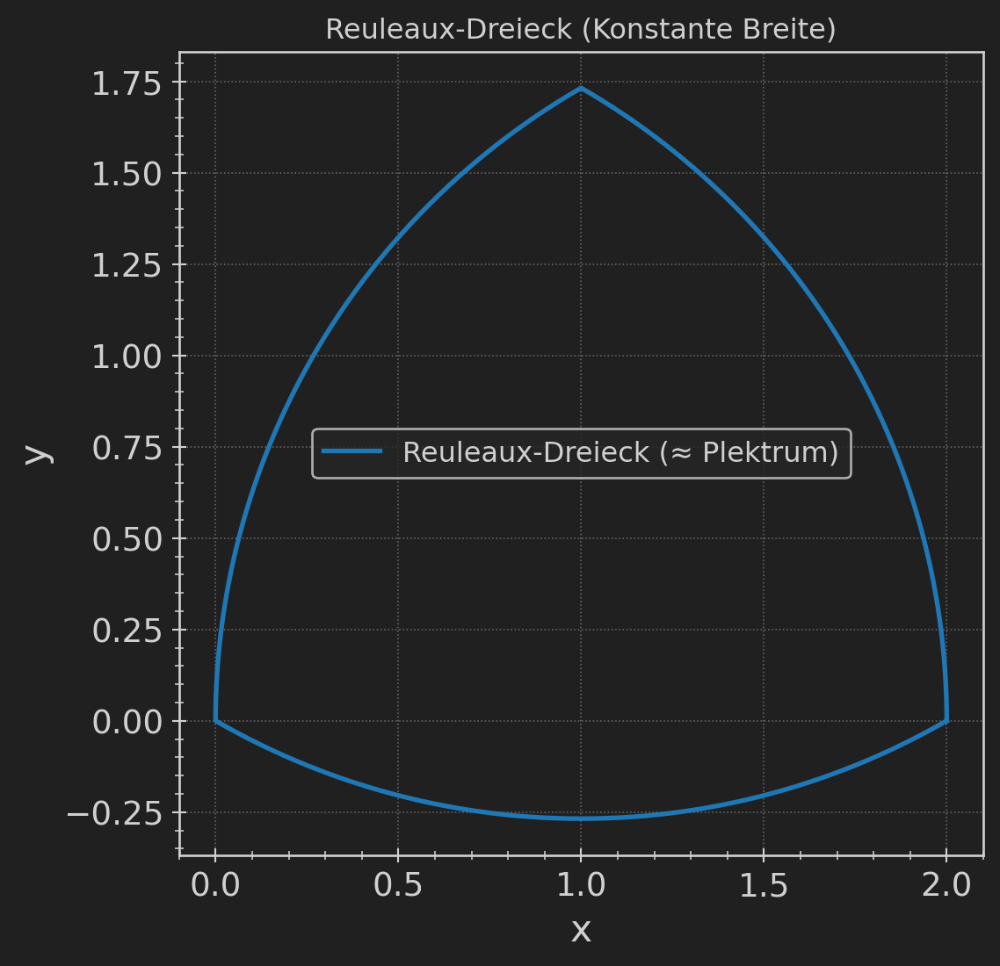
Hinweis: Nicht jedes Plektrum ist ein Reuleaux-Dreieck — viele sind tropfen- oder spitzoval geformt. Das Reuleaux-Profil liefert jedoch eine schöne mathematische Annäherung an „dreieckig mit runden Ecken“.
Aerodynamik: Leistungsbedarf vs. Geschwindigkeit (Radfahren)
\[ P(v) = \tfrac{1}{2}\,\rho\,C_dA\,v^3 + C_{rr}\,m\,g\,v. \]
Für die Leistung am Rad gilt näherungsweise:
- Aerodynamik: (P_ = ,,C_dA,v^3)
- Rollwiderstand: (P_ = C_{rr},m,g,v)
- Gesamt: (P_ = P_ + P_)
Nachfolgend ein Plot für typische Triathlon-Werte ((225,, C_dA=0{.}25,, C_{rr}=0{.}004, m=80,)).
Code
import numpy as np
import matplotlib.pyplot as plt
rho = 1.225 # Luftdichte (kg/m^3)
CdA = 0.25 # Stirnfläche * Widerstandsbeiwert (m^2)
Crr = 0.004 # Rollwiderstandskoeffizient
m = 80.0 # Systemmasse (kg)
g = 9.81 # Erdbeschleunigung (m/s^2)
v = np.linspace(5 / 3.6, 50 / 3.6, 400) # 5..50 km/h in m/s
P_aero = 0.5 * rho * CdA * v**3
P_roll = Crr * m * g * v
P_tot = P_aero + P_roll
kmh = v * 3.6
plt.figure(figsize=(8, 6))
plt.plot(kmh, P_tot, label="P_total", linewidth=2)
plt.plot(kmh, P_aero, label="P_aero")
plt.plot(kmh, P_roll, label="P_roll")
plt.xlabel("Geschwindigkeit (km/h)")
plt.ylabel("Leistung (W)")
plt.title("Leistungsbedarf vs. Geschwindigkeit (Triathlon-Setup)")
plt.grid(True)
plt.legend()
plt.tight_layout()
plt.show()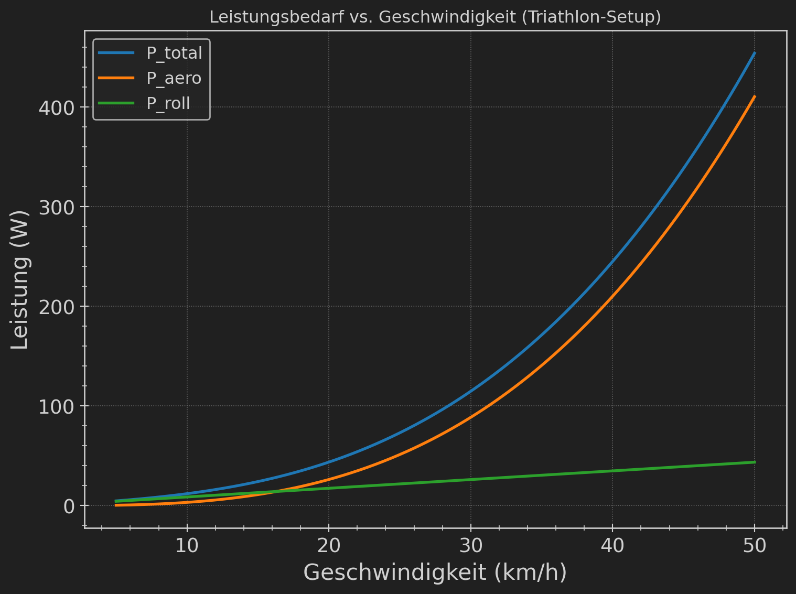
Lesetipp: Die aerodynamische Leistung wächst ~(v^3). Eine Verringerung von (C_dA) (bessere Aeroposition, Helm, Anzug) wirkt deshalb besonders stark bei höheren Geschwindigkeiten.”
Gitarren-Plektrum II: Superformula (abgerundetes Dreieck)
Eine flexible Möglichkeit, ein Plektrum mit dreieckiger Grundform und abgerundeten Ecken zu modellieren, ist die Superformula (Gielis). Mit der Drehsymmetrie (m=3) erhält man eine pick-ähnliche, weiche Dreiecksform. Die Exponenten (n_2, n_3) steuern die Rundung der Seiten, (n_1) die Schärfe der Ecken.
\[ r(\varphi) = \left(\left|\frac{\cos\!\left(\tfrac{m\varphi}{4}\right)}{a}\right|^{n_2} + \left|\frac{\sin\!\left(\tfrac{m\varphi}{4}\right)}{b}\right|^{n_3} \right)^{-\tfrac{1}{n_1}},\quad m=3. \]
Code
import numpy as np
import matplotlib.pyplot as plt
# Superformula-Parameter (erzeugen ein abgerundetes Dreieck)
m, a, b = 3.0, 1.0, 1.0
n1, n2, n3 = 0.2, 1.7, 1.7 # Rundung/Spitzigkeit anpassen
phi = np.linspace(0, 2*np.pi, 2000, endpoint=True)
def superformula(phi, m, a, b, n1, n2, n3, eps=1e-9):
t1 = np.abs(np.cos(m*phi/4)/a)**n2
t2 = np.abs(np.sin(m*phi/4)/b)**n3
r = (t1 + t2 + eps)**(-1.0/n1)
return r
r = superformula(phi, m, a, b, n1, n2, n3)
# Normalisieren und skalieren (ungefähre Breite ~ 2)
r /= r.max()
scale = 1.0
x = scale * r * np.cos(phi)
y = scale * r * np.sin(phi)
plt.figure(figsize=(6, 6))
plt.plot(x, y, label="Superformula-Plektrum (m=3)")
plt.gca().set_aspect("equal", adjustable="box")
plt.axhline(0, linewidth=0.8, alpha=0.6)
plt.axvline(0, linewidth=0.8, alpha=0.6)
plt.grid(True)
plt.xlabel("x")
plt.ylabel("y")
plt.title("Gitarren-Plektrum II: Superformula (abgerundetes Dreieck)")
plt.legend()
plt.tight_layout()
plt.show()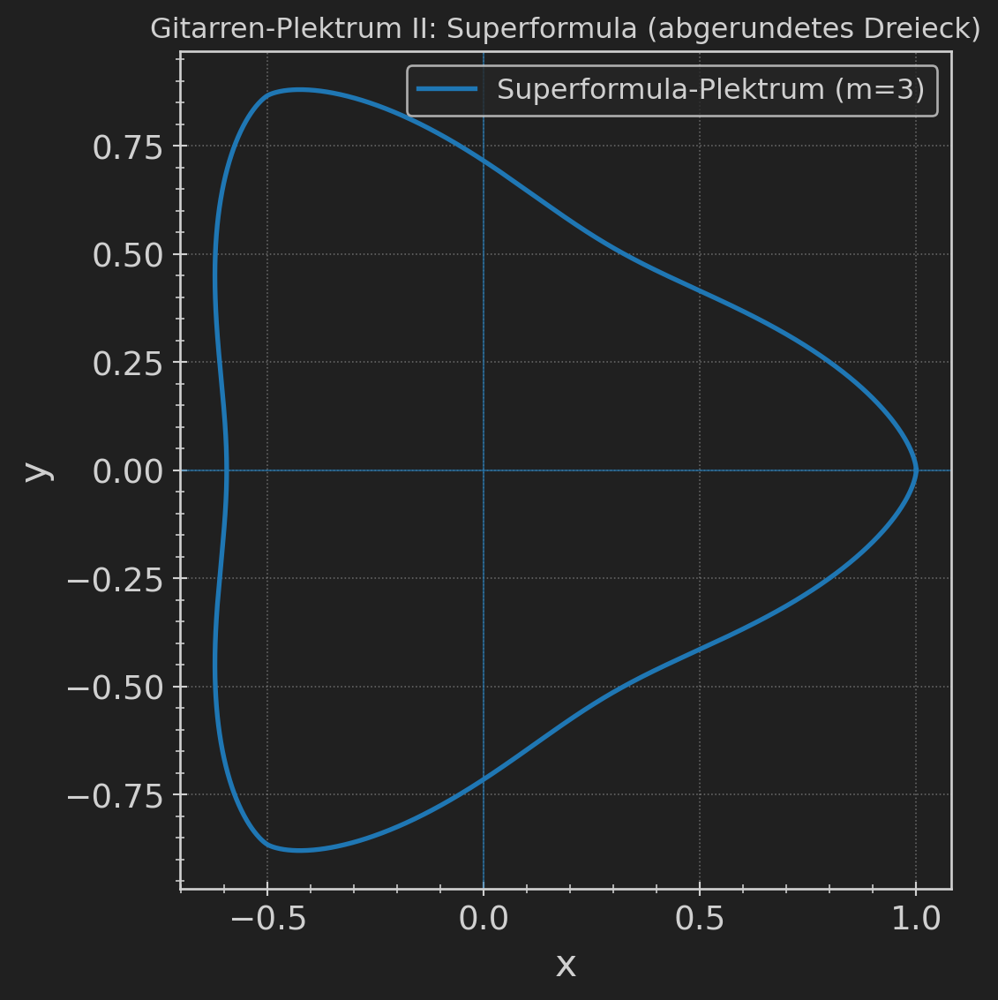
Dreieck mit runden Ecken (60°-Bögen)
Ziel: Ein gleichseitiges Dreieck, bei dem
jede Ecke durch einen
Kreisbogen mit Kreiswinkel 60° ersetzt wird.
Hinweis: Solche 60°-Bögen sind nicht tangential an
die Geraden-Stücke angeschlossen (C⁰-stetig). Ein tangentialer
Fillet an einer 60°-Ecke hätte einen
Kreisbogenwinkel von 120°. Wenn du
Tangentialanschluss möchtest, kann der Code unten mit
phi_arc_deg = 120 verwendet werden.
Formel (Geometrie)
Wir verwenden das gleichseitige Dreieck mit \(A=(0,1), B=!(-,,-), C=!(,,-)\) und Seitenlänge \(s=\). Für einen Radius \(r\) (mit \(0<r<s/2\)) definieren wir pro Ecke \(V\) mit Nachbarn \(U,W\):
\[ Q_{V\to U} \;=\; V + r\,\frac{U-V}{\|U-V\|},\qquad Q_{V\to W} \;=\; V + r\,\frac{W-V}{\|W-V\|}. \]
Der 60°-Bogen an Ecke \(V\) ist der Kreis mit Zentrum \(V\) und Radius \(r\) zwischen den Richtungen \((U-V)\) und \((W-V)\):
\[ \gamma_V(\varphi)\;=\; V + r\,\begin{pmatrix}\cos\varphi\\\\\sin\varphi\end{pmatrix},\quad \varphi\in[\alpha_U,\alpha_W],\ \ \alpha_U=\operatorname{atan2}(U_y{-}V_y,\,U_x{-}V_x),\ \alpha_W=\operatorname{atan2}(W_y{-}V_y,\,W_x{-}V_x). \]
Die Geradenstücke sind die (verkürzten) Seitenabschnitte \(, , \).
Code
import numpy as np
import matplotlib.pyplot as plt
# === Eckpunkte des gleichseitigen Dreiecks (Seite s = sqrt(3)) ===
A = np.array([0.0, 1.0])
B = np.array([-np.sqrt(3)/2, -0.5])
C = np.array([ np.sqrt(3)/2, -0.5])
verts = [A, B, C]
# Einstellungen
r = 0.25 # Rundungsradius (0 < r < s/2)
phi_arc_deg = 60 # Kreisbogenwinkel pro Ecke (60° wie gefordert; 120° ergibt tangentiale Fillets)
# Hilfsfunktionen
def unit(v):
n = np.linalg.norm(v)
return v / n
def angle(v):
return np.arctan2(v[1], v[0])
# Trim-Punkte an den Seiten
AB = B - A; BA = A - B
BC = C - B; CB = B - C
CA = A - C; AC = C - A
QA_B = A + r * unit(AB) # Punkt auf AB, r von A entfernt
QB_A = B + r * unit(BA) # Punkt auf BA, r von B entfernt
QB_C = B + r * unit(BC)
QC_B = C + r * unit(CB)
QC_A = C + r * unit(CA)
QA_C = A + r * unit(AC)
# 60°-Bögen (oder 120° für tangentiale Fillets)
phi = np.deg2rad(phi_arc_deg)
# Bogen an A: von Richtung A->B zu A->C
ang_AB = angle(AB)
ang_AC = angle(AC)
# auf Bereich [-pi, pi): kleineren positiven CCW-Winkel wählen
Delta_A = (ang_AC - ang_AB + np.pi) % (2*np.pi) - np.pi
if Delta_A < 0: # sicherstellen, dass wir die Innenrichtung nehmen
ang_AB, ang_AC = ang_AC, ang_AB
Delta_A = -Delta_A
# Wir erzwingen den gewünschten Kreisbogenwinkel phi
A_arc = np.linspace(ang_AB, ang_AB + phi, 200)
XA = A[0] + r * np.cos(A_arc)
YA = A[1] + r * np.sin(A_arc)
# Bogen an B: von Richtung B->C zu B->A
ang_BC = angle(BC)
ang_BA = angle(BA)
Delta_B = (ang_BA - ang_BC + np.pi) % (2*np.pi) - np.pi
if Delta_B < 0:
ang_BC, ang_BA = ang_BA, ang_BC
Delta_B = -Delta_B
B_arc = np.linspace(ang_BC, ang_BC + phi, 200)
XB = B[0] + r * np.cos(B_arc)
YB = B[1] + r * np.sin(B_arc)
# Bogen an C: von Richtung C->A zu C->B
ang_CA = angle(CA)
ang_CB = angle(CB)
Delta_C = (ang_CB - ang_CA + np.pi) % (2*np.pi) - np.pi
if Delta_C < 0:
ang_CA, ang_CB = ang_CB, ang_CA
Delta_C = -Delta_C
C_arc = np.linspace(ang_CA, ang_CA + phi, 200)
XC = C[0] + r * np.cos(C_arc)
YC = C[1] + r * np.sin(C_arc)
# Geraden-Segmente der drei Seiten (zwischen den Trim-Punkten)
seg_AB_x = np.linspace(QA_B[0], QB_A[0], 200)
seg_AB_y = np.linspace(QA_B[1], QB_A[1], 200)
seg_BC_x = np.linspace(QB_C[0], QC_B[0], 200)
seg_BC_y = np.linspace(QB_C[1], QC_B[1], 200)
seg_CA_x = np.linspace(QC_A[0], QA_C[0], 200)
seg_CA_y = np.linspace(QC_A[1], QA_C[1], 200)
# Plot
plt.figure(figsize=(6, 6))
plt.plot(XA, YA, label="Bogen @A (60°)")
plt.plot(seg_AB_x, seg_AB_y)
plt.plot(XB, YB, label="Bogen @B (60°)")
plt.plot(seg_BC_x, seg_BC_y)
plt.plot(XC, YC, label="Bogen @C (60°)")
plt.plot(seg_CA_x, seg_CA_y)
# Kosmetik
plt.gca().set_aspect('equal', adjustable='box')
plt.axhline(0, linewidth=0.8, alpha=0.6)
plt.axvline(0, linewidth=0.8, alpha=0.6)
plt.grid(True)
plt.xlabel("x")
plt.ylabel("y")
plt.title("Dreieck mit runden Ecken (60°-Bögen)")
plt.legend()
plt.tight_layout()
plt.show()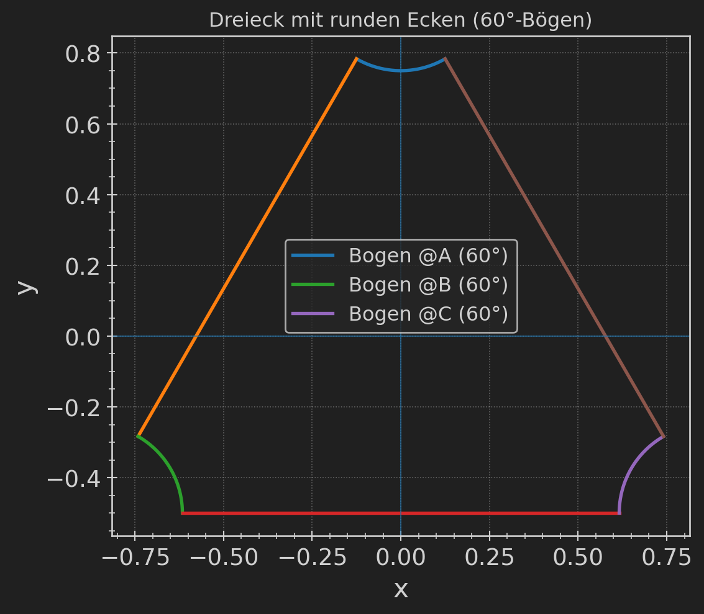
Abgerundetes gleichschenkliges Dreieck (tangentiale Fillets)
Beschreibung. Ein gleichschenkliges Dreieck aus drei Geraden, dessen Ecken mit Radius r durch tangential angeschlossene Kreisbögen (Fillets) ersetzt werden. Die Geradenstücke bleiben erhalten, werden aber an den Enden um die Länge (t) gekürzt, so dass der Kreis jeweils berührend (C¹-stetig) anschließt.
Formel (Geometrie der Fillets)
Für einen Eckpunkt (V) mit Nachbarn (U,W) (umlaufende Reihenfolge, Innenwinkel ((0,))) gelten: \[ \begin{aligned} &t = r\,\cot\!\left(\tfrac{\theta}{2}\right),\qquad d = \frac{r}{\sin(\theta/2)},\\[4pt] &\hat{u} = \frac{U-V}{\|U-V\|},\quad \hat{w} = \frac{W-V}{\|W-V\|},\quad \hat{b} = \frac{\hat{u}+\hat{w}}{\|\hat{u}+\hat{w}\|},\\[4pt] &\text{Tangentialpunkte: }\ T_{VU} = V + t\,\hat{u},\quad T_{VW} = V + t\,\hat{w},\\[4pt] &\text{Kreismittelpunkt: }\ C = V + d\,\hat{b}. \end{aligned} \] Zulässigkeit: (;t{|U{-}V|,|W{-}V|};; r {|U{-}V|,|W{-}V|}(/2).)
Code
import numpy as np
import matplotlib.pyplot as plt
# === Geometrie des gleichschenkligen Dreiecks ===
# Basisbreite und Höhe
b = 4.0
h = 3.0
# Eckpunkte in CCW-Reihenfolge: A (Spitze), B (links), C (rechts)
A = np.array([0.0, h / 2])
B = np.array([-b / 2, -h / 2])
C = np.array([b / 2, -h / 2])
# Gewünschter Fillet-Radius (wird ggf. auf zulässigen Wert begrenzt)
r_wunsch = 0.40
# Hilfsfunktionen
def unit(v):
n = np.linalg.norm(v)
return v / n
def angle_between(u, v):
cu, cv = unit(u), unit(v)
return np.arccos(np.clip(np.dot(cu, cv), -1.0, 1.0))
# Fillet-Daten an einem Eckpunkt V mit Nachbarn U (vorher) und W (nachher)
def fillet_data(V, U, W, r):
theta = angle_between(U - V, W - V) # Innenwinkel
L1, L2 = np.linalg.norm(U - V), np.linalg.norm(W - V)
r_max = min(L1, L2) * np.tan(theta / 2.0) - 1e-9 # damit t<=Kantenlänge
r_eff = min(r, r_max)
t = r_eff / np.tan(theta / 2.0) # r*cot(theta/2)
Tu = V + unit(U - V) * t # Tangente Richtung U
Tw = V + unit(W - V) * t # Tangente Richtung W
bis = unit(unit(U - V) + unit(W - V)) # Winkelhalbierende
d = r_eff / np.sin(theta / 2.0)
Cc = V + bis * d # Kreismittelpunkt
aTu = np.arctan2(Tu[1] - Cc[1], Tu[0] - Cc[0]) # Winkel Tu
aTw = np.arctan2(Tw[1] - Cc[1], Tw[0] - Cc[0]) # Winkel Tw
return (Tu, Tw, Cc, r_eff, aTu, aTw)
# Bogenpunkte CCW von a_start nach a_end (ggf. 2pi addieren)
def arc_ccw(Cc, r, a_start, a_end, n=120):
while a_end <= a_start:
a_end += 2 * np.pi
A = np.linspace(a_start, a_end, n)
return Cc[0] + r * np.cos(A), Cc[1] + r * np.sin(A)
# Fillet-Daten je Ecke (CCW-Reihenfolge A->B->C)
Tu_A, Tw_A, Cc_A, rA, aTu_A, aTw_A = fillet_data(A, B, C, r_wunsch)
Tu_B, Tw_B, Cc_B, rB, aTu_B, aTw_B = fillet_data(B, C, A, r_wunsch)
Tu_C, Tw_C, Cc_C, rC, aTu_C, aTw_C = fillet_data(C, A, B, r_wunsch)
# Gerade AB: von Tangente an A (Richtung B) zu Tangente an B (Richtung A)
segAB_x = np.linspace(Tu_A[0], Tw_B[0], 120)
segAB_y = np.linspace(Tu_A[1], Tw_B[1], 120)
# Bogen an B: von Tw_B (Ende AB) zu Tu_B (Start BC)
arcB_x, arcB_y = arc_ccw(Cc_B, rB, aTw_B, aTu_B)
# Gerade BC
segBC_x = np.linspace(Tu_B[0], Tw_C[0], 120)
segBC_y = np.linspace(Tu_B[1], Tw_C[1], 120)
# Bogen an C
arcC_x, arcC_y = arc_ccw(Cc_C, rC, aTw_C, aTu_C)
# Gerade CA
segCA_x = np.linspace(Tu_C[0], Tw_A[0], 120)
segCA_y = np.linspace(Tu_C[1], Tw_A[1], 120)
# Bogen an A (schließt die Form)
arcA_x, arcA_y = arc_ccw(Cc_A, rA, aTw_A, aTu_A)
# Plot
plt.figure(figsize=(6, 6))
plt.plot(segAB_x, segAB_y)
plt.plot(arcB_x, arcB_y, label="Fillet @B")
plt.plot(segBC_x, segBC_y)
plt.plot(arcC_x, arcC_y, label="Fillet @C")
plt.plot(segCA_x, segCA_y)
plt.plot(arcA_x, arcA_y, label="Fillet @A")
plt.gca().set_aspect("equal", adjustable="box")
plt.axhline(0, linewidth=0.8, alpha=0.6)
plt.axvline(0, linewidth=0.8, alpha=0.6)
plt.grid(True)
plt.xlabel("x")
plt.ylabel("y")
plt.title("Abgerundetes gleichschenkliges Dreieck (tangential)")
plt.legend()
plt.tight_layout()
plt.show()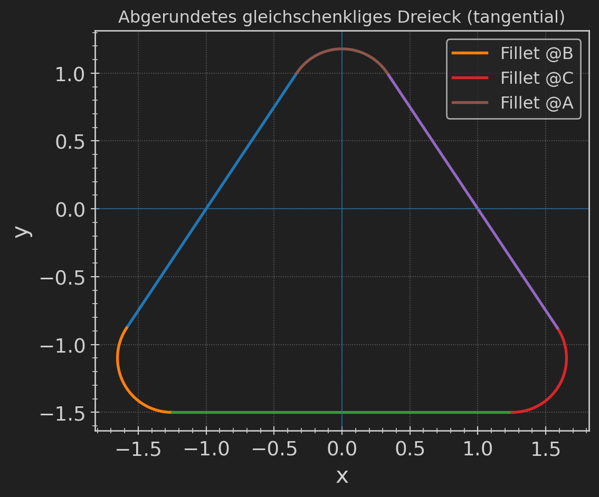
- TODO: ein gleichschenkliges Dreieck aus drei Geraden, dessen Ecken mit einem Radius abgerundet sind
- Das neue Kapitel über TODO: einfügen
- Ultra think hard please!
-
Aufbau
- Kapitel Überschrift
- Beschreibung
- Latex Formel
- python code
- plot
- Den TODO Block nicht verändern
GeoGebra Test
Das ist mal ein Beispiel, wie man GeoGebra in ein Quarto Markdown einbetten kann:
END